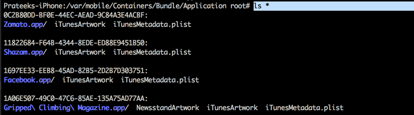
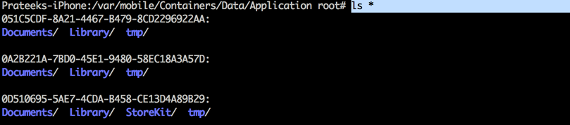
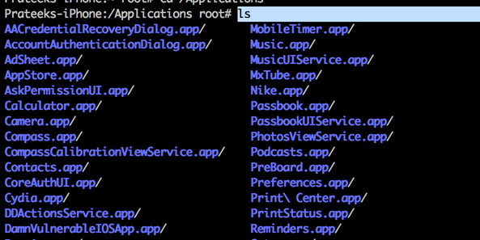
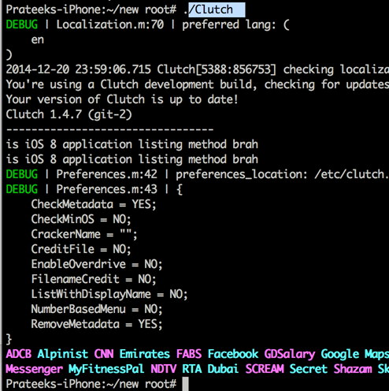
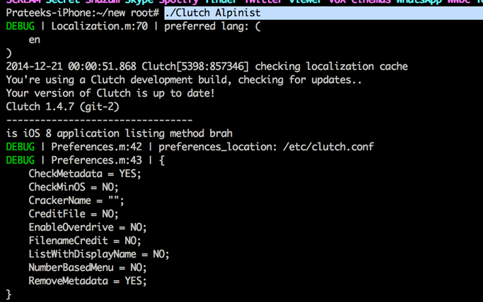
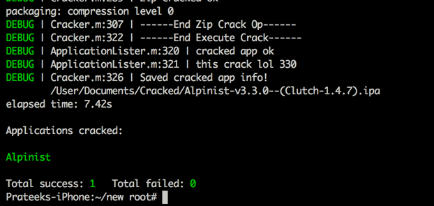
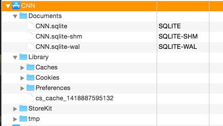
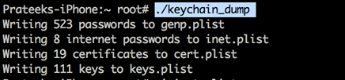

In this article we will look at all the things you need to do to set up a pentesting platform on iOS 8 and be comfortable with using all the tools.
Jailbreaking your device
If your device is running iOS 8.1 or earlier, you can use pangu to jailbreak your device. The process is pretty straightforward. We will not be covering jailbreaking your device in this article but if you want to know how it is done, you can read this article.
Note: I was getting an error with Pangu saying that there was not enough space on my device even though there was enough space. I tried by putting my device into Airplane mode and by turning off Wifi on my laptop and it worked for me.
Once you jailbreak your device, you can install OpenSSH in your device using Cydia and get connectivity to your device.
Location of applications
One of the major changes within the file structure is that the user applications are no longer located at the location /var/mobile/Applications. The application bundle is stored in the location /var/mobile/Containers/Bundle/Application (Appname.app) whereas the application data (Documents, Library, tmp folder) is stored in the location /var/mobile/Containers/Data/Application. The name of the folder (a unique ID) will also be different for the same application. So while checking an application, it is recommended to look at both the locations.

However, the applications that are installed by default on your device with iOS are still located in the location /Applications/. For e.g, the App store application can be seen in the below image.

Decrypting applications
You can download the latest version of clutch to decrypt iOS 8 applications from here. You can download the binary for 1.4.7-git2 as of now. Once you download it on your device, just run it once and then run it again and it will show you the list of encrypted applications on your device.

Simply type Clutch followed by the app name to start decrypting it.

File explorer utilities
Because of the change in the location where applications store data, iExplorer now looks inside the folder /var/mobile/Containers/Data/Application. It however, doesn’t look into the application bundle. The same goes for iFunbox, which is another good file explorer utility for iOS devices. It is however recommended that you also look inside the application bundle folder also while testing an iOS application.

Cycript & class-dump-z
Cycript and class-dump-z both work well on iOS 8 devices. However, please make sure you are using the latest version of cycript (0.9.502 at the time of writing).
Dumping keychain
Keychain dumper works just fine and can still dump all your keychain items in your device.

Swift
According to Apple, Swift is a new programming language for iOS and OS X apps that builds on the best of C and Objective-C, without the constraints of C compatibility. Swift adopts safe programming patterns and adds modern features to make programming easier, more flexible, and more fun. Swift’s clean slate, backed by the mature and much-loved Cocoa and Cocoa Touch frameworks, is an opportunity to reimagine how software development works. In the future articles, we will learn how to use cycript to analyze applications written in swift. However, i recommend you to start learning swift. One of the best resources to learn it from apart from Apple’s documentation is on Ray Wenderlich’s blog. Also, i would like to point out that it might take some time for this language to catch up and be actually used for developing iOS applications. We will cover swift in later articles in this series.